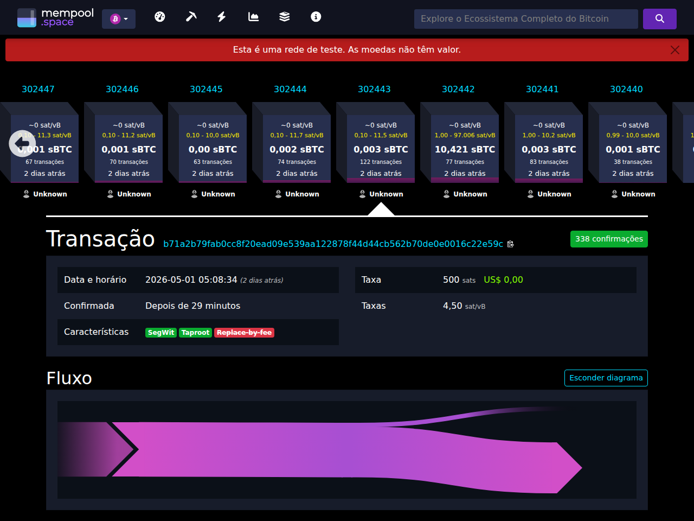
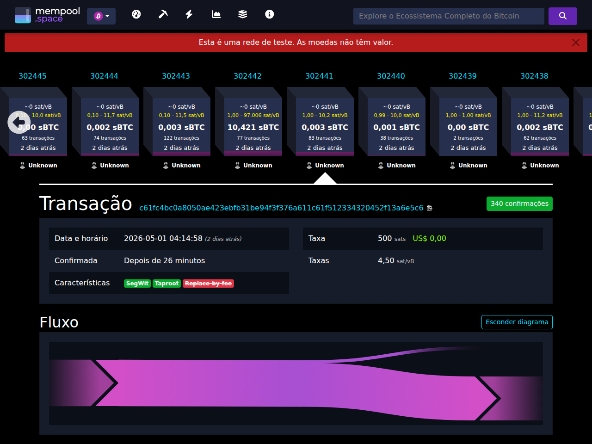
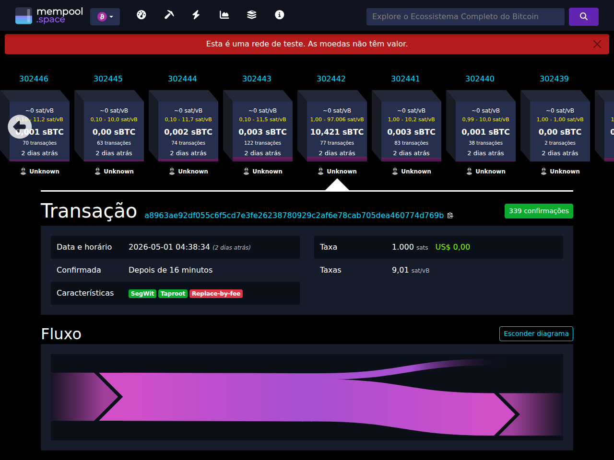

Ver replay
EVIDÊNCIA, NÃO PROMESSA
Olhe para o print como um bitcoiner: uma entrada, uma saída, uma taxa, confirmações. A pergunta é simples: por que essa transação só ficou válida depois do oracle falar?

Parent funding. Parent CET. Bridge. Child funding. A história inteira vira uma sequência de UTXOs. O contrato não é uma promessa fora da cadeia; é uma coreografia de transações preparadas antes e ativadas pelo resultado certo.
O mapa mental
A primeira porta guarda o parent. A segunda é a bridge. A terceira é o child. Antes do evento, as fechaduras já estão instaladas. O oracle não move sats; ele revela a senha que faz a assinatura certa fechar.
Cena 1
Isto é só Bitcoin normal: um UTXO em signet aparece no explorer. A NITI chama isso de parent funding porque é daqui que o primeiro contrato pode ser resolvido.
c61fc4bc...3a6e5c6
Cena 2
Esse número é o segredo do outcome. Quem já tinha o pacote preparado consegue somar esse segredo ao adaptor e transformar uma quase-assinatura em uma assinatura Bitcoin válida.
Cena 3
Depois da attestation, o parent CET gasta o funding. Esse passo é o contrato dizendo: “o resultado chegou; este caminho venceu”.
a8963ae9...774d769b
Cena 4
Aqui está a sacada do cDLC: o segredo que fecha o parent também completa a bridge. A bridge gasta a saída do CET e cria o funding do child. Não tem mágica, tem assinatura que só fecha com o outcome certo.
b71a2b79...22e59cSem o segredo, a bridge é um rascunho criptográfico. Com o segredo, ela vira uma transação Bitcoin normal. Por isso o cDLC consegue encadear contratos sem deixar o próximo passo depender de um signer online na hora do evento.
Falha fechada
O bundle não mostra só o caminho feliz. Ele registra que outcome errado não ativa a edge, pacote ausente não basta e refund antecipado respeita timelock.
Retainer
Cada holder autorizado carrega o pacote preparado. Quando o oracle publica o segredo, qualquer um deles consegue completar a mesma bridge. Eles não recebem signer secret; recebem só o material necessário para agir depois do outcome.
Produto-demo
Em testnet, a mesma mecânica pode ensinar exposição educativa ao dólar: o oracle informa preço, o contrato calcula quantos sats cabem no alvo, e o payout nunca promete dinheiro real.
Simulação em signet/testnet. Sem peg, sem resgate, sem mainnet, sem custódia de valor real.
Prova e replay
O site aponta para txids públicos, bundles commitados e inventário de prova. A parte visual serve para explicar; a confiança vem do replay.
Teste você mesmo
A página só mostra evidência e comandos. Execução ao vivo continua explícita, local e testnet/signet.